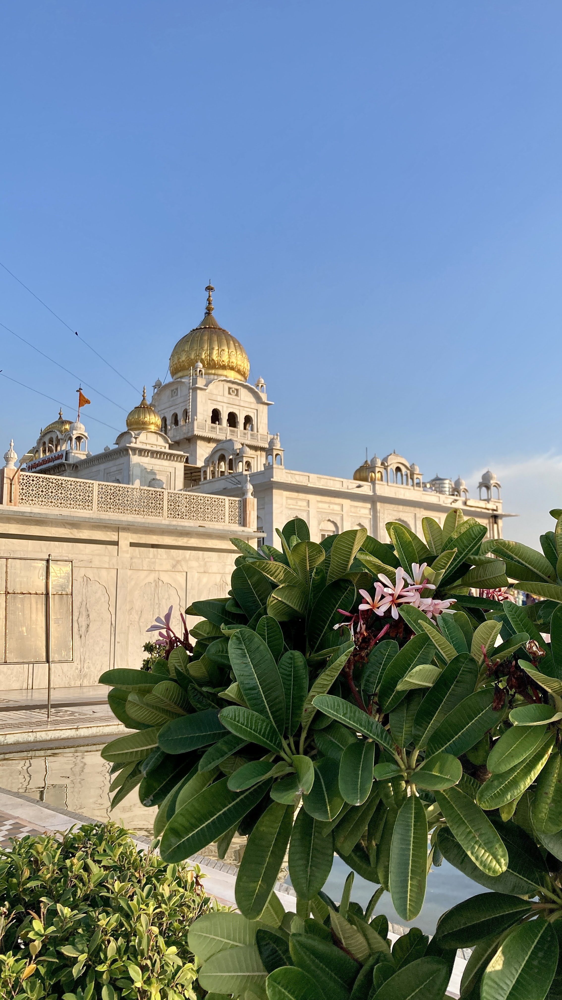

STOPABLETIME
S H A R I N G M E M O R I E S ♥
|| HOME ||

BANGLA SAHIB GURUDWARA
Located at the heart of India, New Delhi.
Gurdwara Bangla Sahib was originally a bungalow belonging to Raja Jai Singh, an Indian ruler in the seventeenth century, and was known as Jaisinghpura Palace, in Jaisingh Pura, an historic neighbourhood demolished to make way for the Connaught Place, shopping district. Since Guru Har Kishan stayed at Raja Jai Singh's Banglow (pronouned "bangla" in hindi languagehindi and punjab) which has now been converted to a gurudwara, now the gurudwara is called the Bangla Sahib to memorialise Guru Har Rai's stay here.
The eighth Sikh Guru, Guru Har Krishan resided here during his stay in Delhi in 1664. During that time, there was a smallpox and cholera epidemic, and Guru Har Krishan Ji helped the suffering by giving aid and fresh water from the well at this house. Soon he too contracted the illness and eventually died on 30 March 1664. A small tank was later constructed by Raja Jai Singh over the well, its water is now revered as having healing properties and is taken by Sikhs throughout the world back to their homes

MEADOW BUTTERCUP
This picture was taken in Lahaul and spiti valley, Himachal pradesh.
Ranunculus acris is a herbaceous perennial plant that grows to a height of 30 to 70 cm, with ungrooved flowing stems bearing glossy yellow flowers about 25 mm across. There are five overlapping petals borne above five green sepals that soon turn yellow as the flower matures. It has numerous stamens inserted below the ovary. The leaves are compound, with three-lobed leaflets. Unlike Ranunculus repens, the terminal leaflet is sessile. As with other members of the genus, the numerous seeds are borne as achenes.
The rare autumn buttercup (R. aestivalis) is sometimes treated as a variety of this species.
The juice of the plant is semi-poisonous to livestock, causing blistering.
|
VIDEO | |
TAGS | |
FORM |